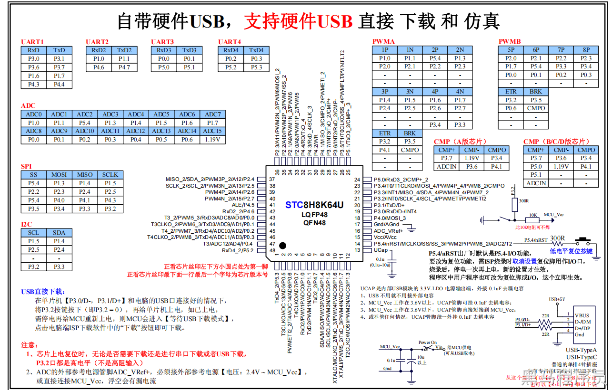

<!DOCTYPE lake>
<h2 data-lake-id="Zgs9i" id="Zgs9i"><span data-lake-id="u8dc82dc4" id="u8dc82dc4">学习目标</span></h2><ol list="ufe62c537"><li data-lake-id="ub3703f7b" fid="u81f2bd15" id="ub3703f7b"><span data-lake-id="u4c98faa6" id="u4c98faa6">了解PWM基础概念和工作原理</span></li><li data-lake-id="u3ecb7b32" fid="u81f2bd15" id="u3ecb7b32"><span data-lake-id="ue21820f9" id="ue21820f9">学习如何在STC8H上配置PWMA</span></li><li data-lake-id="u2bd57742" fid="u81f2bd15" id="u2bd57742"><span data-lake-id="uaa771f66" id="uaa771f66">掌握PWMA的各个配置</span></li><li data-lake-id="ub24ad354" fid="u81f2bd15" id="ub24ad354"><span data-lake-id="u84a6f43f" id="u84a6f43f">学习如何使用PWMA控制LED亮度</span></li><li data-lake-id="u60fa0158" fid="u81f2bd15" id="u60fa0158"><span data-lake-id="ud94c086e" id="ud94c086e">掌握调试PWM的方法</span></li></ol><h2 data-lake-id="NKA45" id="NKA45"><span data-lake-id="u369a15f8" id="u369a15f8">学习内容</span></h2><h3 data-lake-id="if7b2" id="if7b2"><span data-lake-id="uc1864435" id="uc1864435">PWM基础概念</span></h3><p data-lake-id="u92150c24" id="u92150c24"><span data-lake-id="ufb1024a6" id="ufb1024a6">PWM全称是脉宽调制（Pulse Width Modulation），是一种通过改变信号的脉冲宽度来控制电路输出的技术。PWM技术在工业自动化、电机控制、LED调光等领域广泛应用。</span></p><p data-lake-id="u7524de82" id="u7524de82"><span data-lake-id="u784e6f18" id="u784e6f18">PWM是一种将数字信号转换为模拟信号的技术，它通过改变信号的占空比来控制输出的电平。在STC8H中，PWM输出的</span><strong><span data-lake-id="uc9b6b4ec" id="uc9b6b4ec">频率</span></strong><span data-lake-id="u6fcc275c" id="u6fcc275c">和</span><strong><span data-lake-id="u63bd9021" id="u63bd9021">占空比</span></strong><span data-lake-id="u52d8c326" id="u52d8c326">可以由程序控制，因此可以用来控制各种电机、灯光和其他设备的亮度、速度等参数。</span></p><h3 data-lake-id="iOe8b" id="iOe8b"><span data-lake-id="u84cbc410" id="u84cbc410">STC8H芯片</span></h3><p data-lake-id="uad5364aa" id="uad5364aa"><span data-lake-id="u342a095d" id="u342a095d">STC8H 系列的单片机内部集成了8 通道 16 位高级PWM 定时器，分成两周期可不同的 PWM，分别命名为 PWMA 和PWMB ，可分别单独设置。</span></p><p data-lake-id="u31e3378b" id="u31e3378b"><span data-lake-id="u423b455e" id="u423b455e">第一组 PWMA 可配置成4 组互补/对称/死区控制的PWM 或捕捉外部信号。</span></p><p data-lake-id="uaecdf226" id="uaecdf226"><span data-lake-id="ub3835df4" id="ub3835df4">第二组 PWMB 可配置成4 路PWM 输出或捕捉外部信号。</span></p><p data-lake-id="ud9379f80" id="ud9379f80"><span data-lake-id="u1906057a" id="u1906057a">两组 PWM 的时钟频率可分别独立设置。</span></p><p data-lake-id="u3a9f74ad" id="u3a9f74ad"></p><p data-lake-id="u1898c0e7" id="u1898c0e7"><span data-lake-id="ua8fc6844" id="ua8fc6844">PWM与引脚对应关系如下图：</span></p><table class="lake-table" data-lake-id="jTiEJ" id="jTiEJ" margin="true" style="width: 547px"><colgroup><col width="77"/><col width="222"/><col width="124"/><col width="124"/></colgroup><tbody><tr data-lake-id="u123eb26b" id="u123eb26b"><td data-lake-id="u2a02edbf" id="u2a02edbf" style="background-color: #81DFE4; vertical-align: middle"><p data-lake-id="u2e3d4f03" id="u2e3d4f03" style="text-align: center"><strong><span data-lake-id="u528966d6" id="u528966d6">PWM</span></strong></p></td><td data-lake-id="u25c26434" id="u25c26434" style="background-color: #81DFE4; vertical-align: middle"><p data-lake-id="u82c3b002" id="u82c3b002" style="text-align: center"><strong><span data-lake-id="u82891eab" id="u82891eab">PWM通道</span></strong></p></td><td colspan="2" data-lake-id="uc59d9422" id="uc59d9422" style="background-color: #81DFE4; vertical-align: middle"><p data-lake-id="ue3955b1a" id="ue3955b1a" style="text-align: center"><strong><span data-lake-id="u4e2abc8e" id="u4e2abc8e">对应引脚</span></strong></p></td></tr><tr data-lake-id="uf3f606d6" id="uf3f606d6"><td data-lake-id="ue32cee4c" id="ue32cee4c" style="vertical-align: middle"></td><td data-lake-id="uda364f81" id="uda364f81" style="vertical-align: middle"></td><td data-lake-id="u120cef01" id="u120cef01" style="vertical-align: middle"><p data-lake-id="u8f79081d" id="u8f79081d" style="text-align: center"><strong><span data-lake-id="ua288c0dd" id="ua288c0dd">PWMxP</span></strong></p></td><td data-lake-id="u8259db6e" id="u8259db6e" style="vertical-align: middle"><p data-lake-id="u71db24c2" id="u71db24c2" style="text-align: center"><strong><span data-lake-id="u89925d33" id="u89925d33">PWMxN</span></strong></p></td></tr><tr data-lake-id="u111150f4" id="u111150f4"><td data-lake-id="u1bfa183f" id="u1bfa183f" rowspan="9" style="background-color: #E8F7CF; vertical-align: middle"><p data-lake-id="u95a1800d" id="u95a1800d" style="text-align: center"><strong><span data-lake-id="u244dd7c1" id="u244dd7c1">PWMA</span></strong></p></td><td data-lake-id="uceec27a5" id="uceec27a5" rowspan="2" style="background-color: #F4F5F5; vertical-align: middle"><p data-lake-id="u0911c016" id="u0911c016" style="text-align: center"><span data-lake-id="u9de31844" id="u9de31844">PWM1P &amp; PWM1N</span></p></td><td data-lake-id="u93bbaa22" id="u93bbaa22" style="background-color: #F4F5F5; vertical-align: middle"><p data-lake-id="u52b165dc" id="u52b165dc" style="text-align: center"><span data-lake-id="u5cf39aa6" id="u5cf39aa6">P1.0</span></p></td><td data-lake-id="uec52cd5d" id="uec52cd5d" style="background-color: #F4F5F5; vertical-align: middle"><p data-lake-id="u00730a0f" id="u00730a0f" style="text-align: center"><span data-lake-id="ucbfe1f87" id="ucbfe1f87">P1.1</span></p></td></tr><tr data-lake-id="u55bd53db" id="u55bd53db"><td data-lake-id="u548a7ae2" id="u548a7ae2" style="background-color: #F4F5F5; vertical-align: middle"><p data-lake-id="u9f1f6eb9" id="u9f1f6eb9" style="text-align: center"><span data-lake-id="ufb893f69" id="ufb893f69">P2.0</span></p></td><td data-lake-id="u902f5e46" id="u902f5e46" style="background-color: #F4F5F5; vertical-align: middle"><p data-lake-id="u26f20b20" id="u26f20b20" style="text-align: center"><span data-lake-id="u36ef8a65" id="u36ef8a65">P2.1</span></p></td></tr><tr data-lake-id="uddcc85ac" id="uddcc85ac"><td data-lake-id="uff9dbf20" id="uff9dbf20" rowspan="2" style="vertical-align: middle"><p data-lake-id="uc7dce388" id="uc7dce388" style="text-align: center"><span data-lake-id="ufc8bde64" id="ufc8bde64">PWM2P &amp; PWM2N</span></p></td><td data-lake-id="ue9ed5b63" id="ue9ed5b63" style="vertical-align: middle"><p data-lake-id="u518ddde8" id="u518ddde8" style="text-align: center"><span data-lake-id="u0f27b408" id="u0f27b408">P5.4</span></p></td><td data-lake-id="u3bbf74c2" id="u3bbf74c2" style="vertical-align: middle"><p data-lake-id="u277b0245" id="u277b0245" style="text-align: center"><span data-lake-id="u3cb4762f" id="u3cb4762f">P1.3</span></p></td></tr><tr data-lake-id="ua1d303c2" id="ua1d303c2"><td data-lake-id="u49b2ad52" id="u49b2ad52" style="vertical-align: middle"><p data-lake-id="ud2d9cadc" id="ud2d9cadc" style="text-align: center"><span data-lake-id="u58abc06c" id="u58abc06c">P2.2</span></p></td><td data-lake-id="uee28079f" id="uee28079f" style="vertical-align: middle"><p data-lake-id="uea11faf8" id="uea11faf8" style="text-align: center"><span data-lake-id="u57cecd8e" id="u57cecd8e">P2.3</span></p></td></tr><tr data-lake-id="u591d2834" id="u591d2834"><td data-lake-id="uc5a3a4a2" id="uc5a3a4a2" rowspan="2" style="background-color: #F4F5F5; vertical-align: middle"><p data-lake-id="u31d4d2e3" id="u31d4d2e3" style="text-align: center"><span data-lake-id="ue2f469ce" id="ue2f469ce">PWM3P &amp; PWM3N</span></p></td><td data-lake-id="ue5cc3f12" id="ue5cc3f12" style="background-color: #F4F5F5; vertical-align: middle"><p data-lake-id="ub1bea333" id="ub1bea333" style="text-align: center"><span data-lake-id="u64f21ccf" id="u64f21ccf">P1.4</span></p></td><td data-lake-id="ubdb1f738" id="ubdb1f738" style="background-color: #F4F5F5; vertical-align: middle"><p data-lake-id="u09bfa7f4" id="u09bfa7f4" style="text-align: center"><span data-lake-id="ue0c8c5e6" id="ue0c8c5e6">P1.5</span></p></td></tr><tr data-lake-id="u21e19259" id="u21e19259"><td data-lake-id="u0065415d" id="u0065415d" style="background-color: #F4F5F5; vertical-align: middle"><p data-lake-id="u1d855637" id="u1d855637" style="text-align: center"><span data-lake-id="uc62d96e1" id="uc62d96e1">P2.4</span></p></td><td data-lake-id="ub05f2afc" id="ub05f2afc" style="background-color: #F4F5F5; vertical-align: middle"><p data-lake-id="ua190be76" id="ua190be76" style="text-align: center"><span data-lake-id="u45f65392" id="u45f65392">P2.5</span></p></td></tr><tr data-lake-id="ub1ac3e43" id="ub1ac3e43"><td data-lake-id="u4d409bc1" id="u4d409bc1" rowspan="3" style="vertical-align: middle"><p data-lake-id="u1c0bfabe" id="u1c0bfabe" style="text-align: center"><span data-lake-id="u57bc8478" id="u57bc8478">PWM4P &amp; PWM4N</span></p></td><td data-lake-id="ud89d12d9" id="ud89d12d9" style="vertical-align: middle"><p data-lake-id="u222f643f" id="u222f643f" style="text-align: center"><span data-lake-id="u863ed982" id="u863ed982">P1.6</span></p></td><td data-lake-id="u14506efa" id="u14506efa" style="vertical-align: middle"><p data-lake-id="uf344513d" id="uf344513d" style="text-align: center"><span data-lake-id="u5516b151" id="u5516b151">P1.7</span></p></td></tr><tr data-lake-id="u1310ed64" id="u1310ed64"><td data-lake-id="ub4a5d965" id="ub4a5d965" style="vertical-align: middle"><p data-lake-id="ubbd97206" id="ubbd97206" style="text-align: center"><span data-lake-id="ufa2793ad" id="ufa2793ad">P2.6</span></p></td><td data-lake-id="ua7a9f081" id="ua7a9f081" style="vertical-align: middle"><p data-lake-id="u73c06128" id="u73c06128" style="text-align: center"><span data-lake-id="u9feb39b1" id="u9feb39b1">P2.7</span></p></td></tr><tr data-lake-id="u5f8ea66f" id="u5f8ea66f"><td data-lake-id="uc6e8a3c2" id="uc6e8a3c2" style="vertical-align: middle"><p data-lake-id="ufccbc7a5" id="ufccbc7a5" style="text-align: center"><span data-lake-id="u588351c1" id="u588351c1">P3.4</span></p></td><td data-lake-id="ue7f1b7c7" id="ue7f1b7c7" style="vertical-align: middle"><p data-lake-id="ua3235642" id="ua3235642" style="text-align: center"><span data-lake-id="u11a025d4" id="u11a025d4">P3.3</span></p></td></tr><tr data-lake-id="u974dccba" id="u974dccba"><td data-lake-id="u6a39f1fc" id="u6a39f1fc" rowspan="12" style="background-color: #CEF5F7; vertical-align: middle"><p data-lake-id="u5ed36826" id="u5ed36826" style="text-align: center"><strong><span data-lake-id="u8147c67b" id="u8147c67b">PWMB</span></strong></p></td><td data-lake-id="uafabf685" id="uafabf685" rowspan="3" style="background-color: #F4F5F5; vertical-align: middle"><p data-lake-id="u473aa3c1" id="u473aa3c1" style="text-align: center"><span data-lake-id="uff6e1386" id="uff6e1386">PWM5</span></p></td><td colspan="2" data-lake-id="u4a09e309" id="u4a09e309" style="background-color: #F4F5F5; vertical-align: middle"><p data-lake-id="u355e974a" id="u355e974a" style="text-align: center"><span data-lake-id="uc7d84e32" id="uc7d84e32">P0.0</span></p></td></tr><tr data-lake-id="u0f8b451b" id="u0f8b451b"><td colspan="2" data-lake-id="u39812eb8" id="u39812eb8" style="background-color: #F4F5F5; vertical-align: middle"><p data-lake-id="ub468b922" id="ub468b922" style="text-align: center"><span data-lake-id="uac605b43" id="uac605b43">P1.7</span></p></td></tr><tr data-lake-id="u1d6be33f" id="u1d6be33f"><td colspan="2" data-lake-id="uddcaf1ab" id="uddcaf1ab" style="background-color: #F4F5F5; vertical-align: middle"><p data-lake-id="ua1b9d6ff" id="ua1b9d6ff" style="text-align: center"><span data-lake-id="ufa2c913e" id="ufa2c913e">P2.0</span></p></td></tr><tr data-lake-id="ub8e9408f" id="ub8e9408f"><td data-lake-id="ub2b7b47b" id="ub2b7b47b" rowspan="3" style="vertical-align: middle"><p data-lake-id="u7b7d8724" id="u7b7d8724" style="text-align: center"><span data-lake-id="u8bd8e0f0" id="u8bd8e0f0">PWM6</span></p></td><td colspan="2" data-lake-id="u45901de9" id="u45901de9" style="vertical-align: middle"><p data-lake-id="u658f9534" id="u658f9534" style="text-align: center"><span data-lake-id="u6b1ae5de" id="u6b1ae5de">P0.1</span></p></td></tr><tr data-lake-id="u01a2d04c" id="u01a2d04c"><td colspan="2" data-lake-id="u985b1f14" id="u985b1f14" style="vertical-align: middle"><p data-lake-id="u4811a2ab" id="u4811a2ab" style="text-align: center"><span data-lake-id="u129cb5cc" id="u129cb5cc">P2.1</span></p></td></tr><tr data-lake-id="u4012a58c" id="u4012a58c"><td colspan="2" data-lake-id="uc4223ebe" id="uc4223ebe" style="vertical-align: middle"><p data-lake-id="u3c691236" id="u3c691236" style="text-align: center"><span data-lake-id="u5f94060f" id="u5f94060f">P5.4</span></p></td></tr><tr data-lake-id="udab22576" id="udab22576"><td data-lake-id="u40494ae1" id="u40494ae1" rowspan="3" style="background-color: #F4F5F5; vertical-align: middle"><p data-lake-id="u95601807" id="u95601807" style="text-align: center"><span data-lake-id="uccb6d24b" id="uccb6d24b">PWM7</span></p></td><td colspan="2" data-lake-id="u3770a23f" id="u3770a23f" style="background-color: #F4F5F5; vertical-align: middle"><p data-lake-id="u65a602eb" id="u65a602eb" style="text-align: center"><span data-lake-id="ufd7fc1f3" id="ufd7fc1f3">P0.2</span></p></td></tr><tr data-lake-id="uc9e0997c" id="uc9e0997c"><td colspan="2" data-lake-id="uf19ae1d3" id="uf19ae1d3" style="background-color: #F4F5F5; vertical-align: middle"><p data-lake-id="u69aafa88" id="u69aafa88" style="text-align: center"><span data-lake-id="u0e635832" id="u0e635832">P2.2</span></p></td></tr><tr data-lake-id="u0c0d70fa" id="u0c0d70fa"><td colspan="2" data-lake-id="ued242fd1" id="ued242fd1" style="background-color: #F4F5F5; vertical-align: middle"><p data-lake-id="u84f25dae" id="u84f25dae" style="text-align: center"><span data-lake-id="u932700ff" id="u932700ff">P3.3</span></p></td></tr><tr data-lake-id="u138d1652" id="u138d1652"><td data-lake-id="uf87bd5d7" id="uf87bd5d7" rowspan="3" style="vertical-align: middle"><p data-lake-id="uc8135228" id="uc8135228" style="text-align: center"><span data-lake-id="ua7ac9a1f" id="ua7ac9a1f">PWM8</span></p></td><td colspan="2" data-lake-id="u4125f234" id="u4125f234" style="vertical-align: middle"><p data-lake-id="u02cd19b2" id="u02cd19b2" style="text-align: center"><span data-lake-id="u1033a4ae" id="u1033a4ae">P0.3</span></p></td></tr><tr data-lake-id="uededa282" id="uededa282"><td colspan="2" data-lake-id="u206e2862" id="u206e2862" style="vertical-align: middle"><p data-lake-id="uce5607ea" id="uce5607ea" style="text-align: center"><span data-lake-id="ub2d67b5c" id="ub2d67b5c">P2.3</span></p></td></tr><tr data-lake-id="ud4f7ac48" id="ud4f7ac48"><td colspan="2" data-lake-id="u7ee68c53" id="u7ee68c53" style="vertical-align: middle"><p data-lake-id="u67e6dc81" id="u67e6dc81" style="text-align: center"><span data-lake-id="u6299c00e" id="u6299c00e">P3.4</span></p></td></tr></tbody></table><h3 data-lake-id="k1IIe" id="k1IIe"><span data-lake-id="uf3d83026" id="uf3d83026">PWMA应用</span></h3><p data-lake-id="u4ef7dd35" id="u4ef7dd35"><span data-lake-id="u8d61c16c" id="u8d61c16c">控制引脚P2.7实现LED灯1的呼吸效果。</span></p><ol list="u0d07fa4e"><li data-lake-id="u5556b90b" fid="u6b0a409c" id="u5556b90b"><span data-lake-id="u510f25e4" id="u510f25e4">拷贝所需库文件（其他必备库请自行准备）</span></li></ol><ol data-lake-indent="1" list="u0d07fa4e"><li data-lake-id="u4c97b993" fid="u6b0a409c" id="u4c97b993"><code data-lake-id="ud275b295" id="ud275b295"><span data-lake-id="u800fccb6" id="u800fccb6">STC8H_PWM.c</span></code><code data-lake-id="ue0d9b471" id="ue0d9b471"><span data-lake-id="u95090c87" id="u95090c87">STC8H_PWM.h</span></code></li><li data-lake-id="udd8415d5" fid="u6b0a409c" id="udd8415d5"><code data-lake-id="u8f5231cd" id="u8f5231cd"><span data-lake-id="u64a9320f" id="u64a9320f">NVIC.c</span></code><code data-lake-id="u6a0af855" id="u6a0af855"><span data-lake-id="uc23d9dbf" id="uc23d9dbf">NVIC.h</span></code></li><li data-lake-id="u0a7e3f18" fid="u6b0a409c" id="u0a7e3f18"><code data-lake-id="ub50aaa5f" id="ub50aaa5f"><span data-lake-id="u32a0de58" id="u32a0de58">Switch.h</span></code></li></ol><ol list="u0d07fa4e" start="2"><li data-lake-id="u3d25a7f7" fid="u6b0a409c" id="u3d25a7f7"><span data-lake-id="u885061c5" id="u885061c5">导入头文件，初始化宏及全局变量</span></li></ol><span class="yuque-card-unsupported">[codeblock]</span><ol list="u0d07fa4e" start="3"><li data-lake-id="u14a8d7a4" fid="u6b0a409c" id="u14a8d7a4"><span data-lake-id="uf1fb9f52" id="uf1fb9f52">配置GPIO</span></li></ol><span class="yuque-card-unsupported">[codeblock]</span><ol list="u0d07fa4e" start="4"><li data-lake-id="u55c3dc07" fid="u6b0a409c" id="u55c3dc07"><span data-lake-id="u91c6fe4c" id="u91c6fe4c">配置PWM</span></li></ol><span class="yuque-card-unsupported">[codeblock]</span><ol list="ue71976d4" start="5"><li data-lake-id="ub0f0b92e" fid="uc3ac8d15" id="ub0f0b92e"><span data-lake-id="uf16c1712" id="uf16c1712">编写Main函数</span></li></ol><span class="yuque-card-unsupported">[codeblock]</span><h3 data-lake-id="SF5Zj" id="SF5Zj"><span data-lake-id="u735a1d28" id="u735a1d28">PWM配置详解</span></h3><h4 data-lake-id="XxFAe" id="XxFAe"><span data-lake-id="u45c713cd" id="u45c713cd">周期</span></h4><p data-lake-id="ua5b02da9" id="ua5b02da9"><span data-lake-id="ub98e4434" id="ub98e4434">系统主频：1秒钟计数多少次。</span></p><p data-lake-id="u5ee0fc1f" id="u5ee0fc1f"><span data-lake-id="ua671108e" id="ua671108e">代码中的PWM周期(PWM Period)，指的是按N等份切分1秒钟，每个等份的计数值。</span></p><p data-lake-id="u968e8629" id="u968e8629"></p><p data-lake-id="u030c7589" id="u030c7589"><span data-lake-id="u4760964e" id="u4760964e">例如上图，我们按照8等份切分1秒钟的总计数值</span><code data-lake-id="u956943e5" id="u956943e5"><span data-lake-id="udecd795e" id="udecd795e">MAIN_Fosc</span></code><span data-lake-id="u36d674ab" id="u36d674ab">（主频），每个PWM周期的计数值为：</span></p><p data-lake-id="ufa619116" id="ufa619116"><code data-lake-id="u8b2f113d" id="u8b2f113d"><span data-lake-id="u3bdbb98b" id="u3bdbb98b">PWM_Period = MAIN_Fosc / 8 = 24M / 8 = 3M = 3 000 000</span></code><span data-lake-id="u871aec40" id="u871aec40"> 单位为次。</span></p><p data-lake-id="u03809357" id="u03809357"><span data-lake-id="u4feb4d62" id="u4feb4d62">即如果将这个</span><code data-lake-id="u05d84338" id="u05d84338"><span data-lake-id="u630cc573" id="u630cc573">3M</span></code><span data-lake-id="u46a48c29" id="u46a48c29">作为</span><code data-lake-id="u6d827939" id="u6d827939"><span data-lake-id="u00b3ad4e" id="u00b3ad4e">Period</span></code><span data-lake-id="u53033a45" id="u53033a45">参数，可以得到PWM方波每个周期的时长为：</span></p><p data-lake-id="uf831fe01" id="uf831fe01"><code data-lake-id="u8c01fe8e" id="u8c01fe8e"><span data-lake-id="u76c06dd6" id="u76c06dd6">1 / 8 = 0.125s</span></code></p><p data-lake-id="ufe828405" id="ufe828405"><span data-lake-id="ufb624971" id="ufb624971">​</span><br/></p><p data-lake-id="ub934ff2d" id="ub934ff2d"><span data-lake-id="u2568f5e5" id="u2568f5e5">代码中的配置：</span></p><span class="yuque-card-unsupported">[codeblock]</span><p data-lake-id="u9c2bfaf2" id="u9c2bfaf2"><span data-lake-id="u1712c10e" id="u1712c10e">配置的是周期中的计数值。</span></p><p data-lake-id="ub5352ace" id="ub5352ace"><span data-lake-id="u7abbb0e8" id="u7abbb0e8">我们的理解策略：通常我们不关心计数值，关心的是1秒钟执行多少次（即频率Hz），也就是一秒钟多少个周期。</span></p><p data-lake-id="u8afdbc53" id="u8afdbc53"><span data-lake-id="uea4e1bf0" id="uea4e1bf0">因此在代码</span><code data-lake-id="uf4cd8a9a" id="uf4cd8a9a"><span data-lake-id="ue08335f1" id="ue08335f1">MAIN_Fosc / 1000</span></code><span data-lake-id="u6e67e69c" id="u6e67e69c">中的</span><code data-lake-id="u09566601" id="u09566601"><span data-lake-id="u13495f98" id="u13495f98">1000</span></code><span data-lake-id="u195e100e" id="u195e100e">表示的是1秒钟多少个周期（即频率Hz）。</span></p><p data-lake-id="u18215955" id="u18215955"><code data-lake-id="uae42c345" id="uae42c345"><span data-lake-id="u54ee72b0" id="u54ee72b0">MAIN_Fosc / 1000</span></code><span data-lake-id="ua28d637f" id="ua28d637f">表示的是每个周期的计数值。那为什么要</span><code data-lake-id="u0e7e6d68" id="u0e7e6d68"><span data-lake-id="u039cccfe" id="u039cccfe">-1</span></code><span data-lake-id="u83736ffa" id="u83736ffa">呢？因为计数器是从0开始计数的。</span></p><h4 data-lake-id="GPVOV" id="GPVOV"><span data-lake-id="u5cb107ee" id="u5cb107ee">占空比</span></h4><p data-lake-id="u605ed8c2" id="u605ed8c2"><span data-lake-id="uf7869e36" id="uf7869e36">在一个PWM的周期计数中，高电平的计数时长百分比。</span></p><p data-lake-id="u61680716" id="u61680716"></p><h4 data-lake-id="yAHtR" id="yAHtR"><span data-lake-id="u309ff89b" id="u309ff89b">模式</span></h4><ul list="ucf953848"><li data-lake-id="u4da40f84" fid="u7ee41d7a" id="u4da40f84"><span data-lake-id="u87508082" id="u87508082">冻结: CCMRn_FREEZE</span></li><li data-lake-id="u3e55c1f4" fid="u7ee41d7a" id="u3e55c1f4"><span data-lake-id="ue140de8f" id="ue140de8f">匹配时设置通道 n 的输出为有效电平: CCMRn_MATCH_VALID</span></li><li data-lake-id="u31131f13" fid="u7ee41d7a" id="u31131f13"><span data-lake-id="u48e87ff5" id="u48e87ff5">匹配时设置通道 n 的输出为无效电平: CCMRn_MATCH_INVALID</span></li><li data-lake-id="u4878a514" fid="u7ee41d7a" id="u4878a514"><span data-lake-id="ub5ed3daf" id="ub5ed3daf">翻转: CCMRn_ROLLOVER </span></li><li data-lake-id="u63424891" fid="u7ee41d7a" id="u63424891"><span data-lake-id="ub25fc93c" id="ub25fc93c">强制为无效电平:  CCMRn_FORCE_INVALID</span></li><li data-lake-id="ud5169b1c" fid="u7ee41d7a" id="ud5169b1c"><span data-lake-id="u90328d48" id="u90328d48">强制为有效电平:  CCMRn_FORCE_VALID</span></li><li data-lake-id="u3c9bb2bd" fid="u7ee41d7a" id="u3c9bb2bd"><span data-lake-id="u96da89fd" id="u96da89fd">PWM 模式 1: CCMRn_PWM_MODE1</span></li><li data-lake-id="u00491be4" fid="u7ee41d7a" id="u00491be4"><span data-lake-id="ued309ba1" id="ued309ba1">PWM 模式 2: CCMRn_PWM_MODE2 </span></li></ul><p data-lake-id="u091b6901" id="u091b6901"><span data-lake-id="u3b7a71ea" id="u3b7a71ea">常用的为</span><code data-lake-id="uc0da00f1" id="uc0da00f1"><span data-lake-id="u036bcb7a" id="u036bcb7a">PWM 模式 1</span></code><code data-lake-id="u458938f0" id="u458938f0"><span data-lake-id="u8aa90fc6" id="u8aa90fc6">PWM 模式 2</span></code></p><p data-lake-id="u473db2d8" id="u473db2d8"><span data-lake-id="ub45aa50c" id="ub45aa50c">PWM 模式 1和PWM 模式 2是反向的，一个占空比越大越亮，一个是越小越亮。</span></p><h4 data-lake-id="HQUgj" id="HQUgj"><span data-lake-id="udb705595" id="udb705595">使能PWM</span></h4><span class="yuque-card-unsupported">[codeblock]</span><h4 data-lake-id="FY5xJ" id="FY5xJ"><span data-lake-id="u332f3ac4" id="u332f3ac4">引脚配置</span></h4><span class="yuque-card-unsupported">[codeblock]</span><p data-lake-id="ucd5e67e3" id="ucd5e67e3"><span data-lake-id="u9721d927" id="u9721d927">使能配置成功后，pwm才能工作。</span></p><p data-lake-id="u5f49ab12" id="u5f49ab12"><span data-lake-id="ud8badb90" id="ud8badb90">如果运行中pwm想停止掉，也可以通过配置使能来停止。</span></p><p data-lake-id="u47212bd3" id="u47212bd3"><span data-lake-id="u6d95a5b9" id="u6d95a5b9">​</span><br/></p><h4 data-lake-id="ta6Mj" id="ta6Mj"><span data-lake-id="u057ccf20" id="u057ccf20">EAXSFR扩展寄存器</span></h4><p data-lake-id="u3d741a75" id="u3d741a75"><span data-lake-id="udf12fd32" id="udf12fd32">由于PWM的配置相关特殊功能寄存器位于扩展RAM区域，访问这些寄存器,需先将P_SW2的BIT7设置为1,才可正常读写。</span></p><span class="yuque-card-unsupported">[codeblock]</span><p data-lake-id="u5d605d8f" id="u5d605d8f"><span data-lake-id="ubfdab661" id="ubfdab661">详细可参见STC8手册：</span></p><ul list="ue06de13b"><li data-lake-id="u429e5984" fid="u1757301f" id="u429e5984"><span data-lake-id="ub738728b" id="ub738728b">3.1.2 《外设端口切换控制寄存器 2（P_SW2）》</span></li><li data-lake-id="uaf72b244" fid="u1757301f" id="uaf72b244"><span data-lake-id="u8f8d2a89" id="u8f8d2a89">9.2.8 《扩展 SFR 使能寄存器 EAXFR 的使用说明》</span></li></ul><p data-lake-id="u115b1002" id="u115b1002"><br/></p><h2 data-lake-id="YRGLe" id="YRGLe"><span data-lake-id="u32c0744c" id="u32c0744c">练习题</span></h2><ol list="u3e794791"><li data-lake-id="ubc77e26b" fid="u52302530" id="ubc77e26b"><span data-lake-id="uc85fd957" id="uc85fd957">使用PWMA实现8路呼吸灯</span></li><li data-lake-id="u0e65c6c7" fid="u52302530" id="u0e65c6c7"><span data-lake-id="u21024b74" id="u21024b74">串口控制灯的明暗程度</span></li></ol>